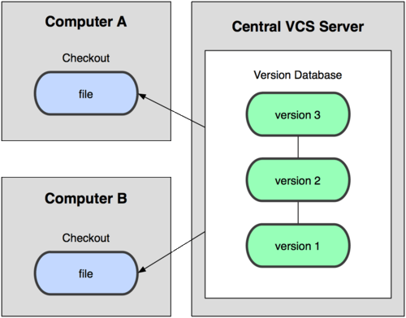

Your browser doesn't support the features required by impress.js, so you are presented with a simplified version of this presentation.
For the best experience please use the latest Chrome, Safari or Firefox browser.
Git
Basic Principles
by Sankhesh Jhaveri, Dhananjay Deo & Brian Helba
Why version control??



Introduce yourself
$ git config --global user.name "Your Name"
$ git config --global user.email youremail@email.com
Check Configuration
$ git config --list
Getting help
$ git help
In a nutshell
SHA-1 sum
$ echo 'Hello, world!' > greeting
$ git hash-object greeting
af5626b4a114abcb82d63db7c8082c3c4756e51b
- 160-bit 40-character unique id
- Identify changes in data
- Same data will always be represented by the same object (blob)
Cloning an existing repository
$ git clone git://github.com/ASIST-SUNY-Albany/Git-Workshop-2013.git myRepo
$ git clone https://github.com/ASIST-SUNY-Albany/Git-Workshop-2013.git myRepo
$ git clone git@github.com:ASIST-SUNY-Albany/Git-Workshop-2013.git myRepo
Undoing things
Amend Last commit
$ git commit --amend
Unstaging a staged file
$ git reset HEAD filename
Unmodifying a modified file
$ git checkout -- filename
Blame
$ git blame filename
Branching
$ git checkout -b iss53
Merging
$ git checkout master
$ git merge iss53

Something wrong??
$ git merge iss53
Auto-merging merging.txt
CONFLICT (content): Merge conflict in merging.txt
Automatic merge failed; fix conflicts and then commit the result.
<<<<<<< HEAD:merging.txt
Here is the original change.
=======
Here is the modified change.
>>>>>>> iss53:merging.txt
Rebase
$ git checkout experiment
$ git rebase master
Trivia Time
Git & Binary Files?
Do you have to use Vim as the editor?
Are you restricted to a single remote repository?
Use a spacebar or arrow keys to navigate